The Prophets' Teachings
Discourses, Epistles, Books, Sermons, &c.
HomeFilters
All images can be found at Image Gallery
 Joseph Smith Jr.
Joseph Smith Jr.
Ordained Apostle:
May 1829
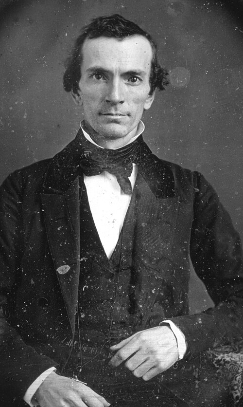
Oliver CowderyOrdained Apostle:
May 1829
1830
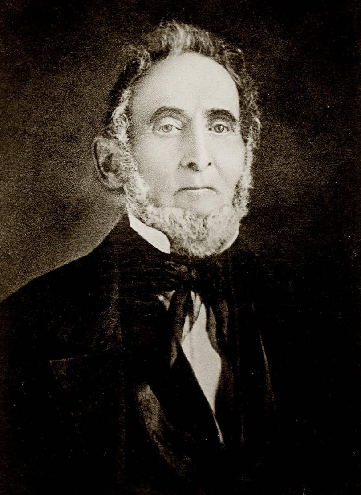
Sidney RigdonOrdained 2nd Counselor:
March 1832
 Frederick G. William
Frederick G. William
Ordained 2nd Counselor:
Feb 1833
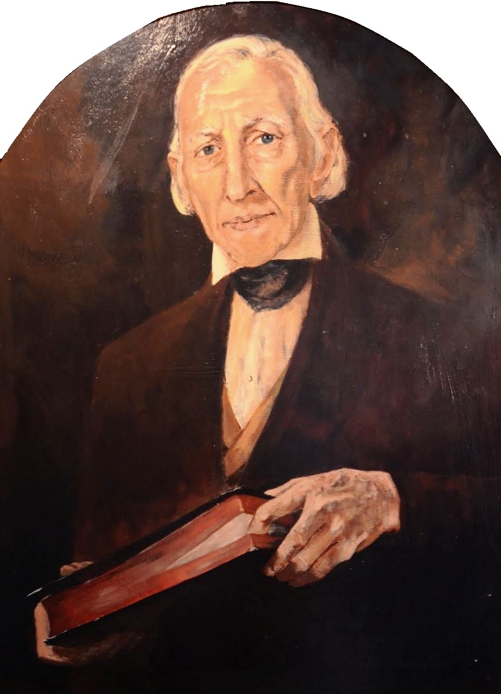
Joseph Smith Sr.Oradained Patriarch:
Dec 1833
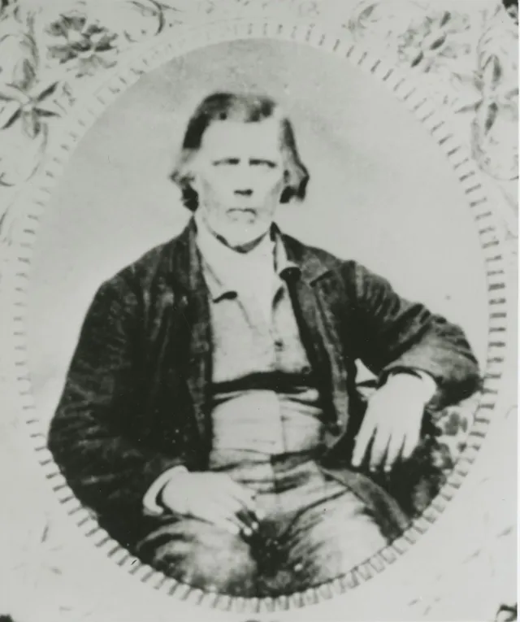
Thomas B. MarshOrdained Apostle:
April 1835
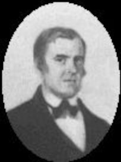
David W. PattenOrdained Apostle:
Feb 1835
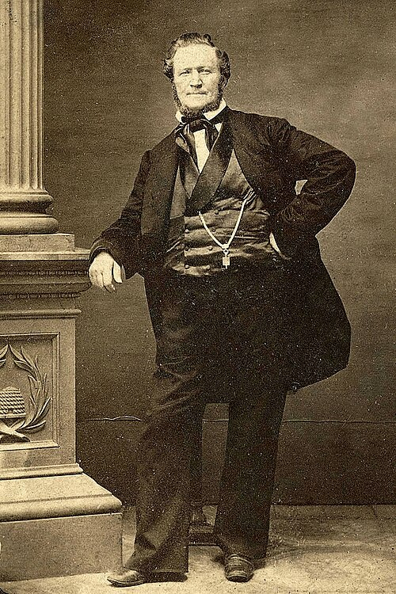
Brigham YoungOrdained Apostle:
Feb 1835
 Heber C. Kimball
Heber C. Kimball
Ordained Apostle:
Feb 1835
 William E. McClellin
William E. McClellin
Ordained Apostle:
Feb 1835
 Parley P. Pratt
Parley P. Pratt
Ordained Apostle:
Feb 1835
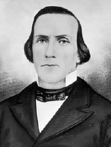
Luke S. JohnsonOrdained Apostle:
Feb 1835
 William B. Smith
William B. Smith
Ordained Apostle:
Feb 1835
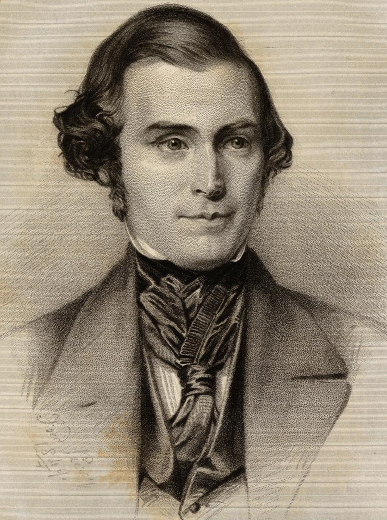
Orson PrattOrdained Apostle:
Feb 1835
 John F. Boynton
John F. Boynton
Oradained Apostle:
Feb 1835
 Lyman E. Johnson
Lyman E. Johnson
Ordained Apostle:
Feb 1835
 Hyrum Smith
Hyrum Smith
Ordained 2nd Counselor:
Nov 1837
 John Taylor
John Taylor
Ordained Apostle:
Dec 1838
 John E. Page
John E. Page
Ordained Apostle:
Dec 1838
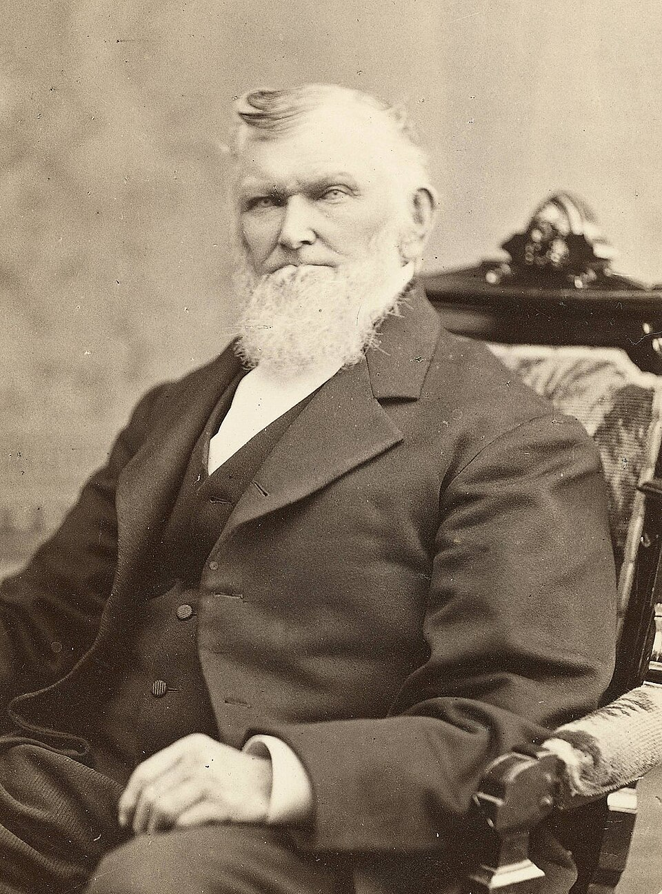
Wilford WoodruffOrdained Apostle:
April 1839
 George A. Smith
George A. Smith
Ordained Apostle:
Aug 1839
1840
 Willard Richards
Willard Richards
Ordained Apostle:
April 1840
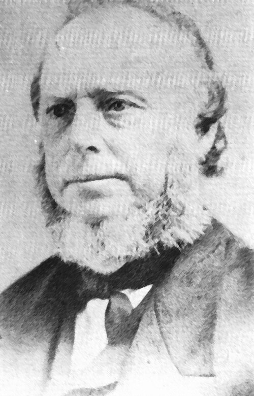
William LawOrdained 2nd Counselor:
Jan 1841
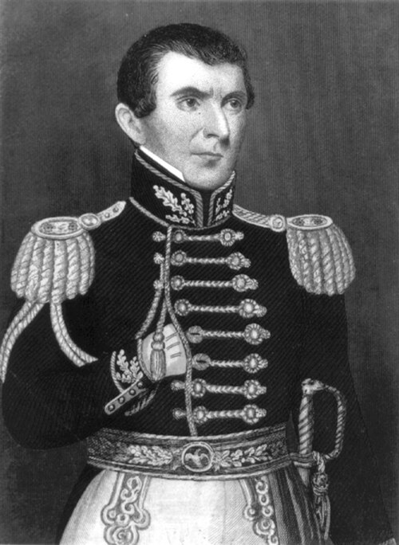
John C. BennettOrdained Ass't Pres't:
April 1841
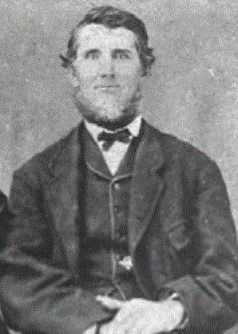
Lyman WightOrdained Apostle:
April 1841
 Amasa M. Lyman
Amasa M. Lyman
Ordained Apostle:
Aug 1842
 Ezra T. Benson
Ezra T. Benson
Ordained Apostle:
July 1846
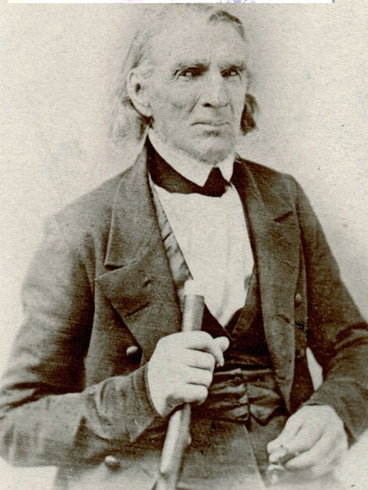
Uncle JohnOrdained Patriarch:
Jan 1849
 Charles C. Rich
Charles C. Rich
Ordained Apostle:
Feb 1849
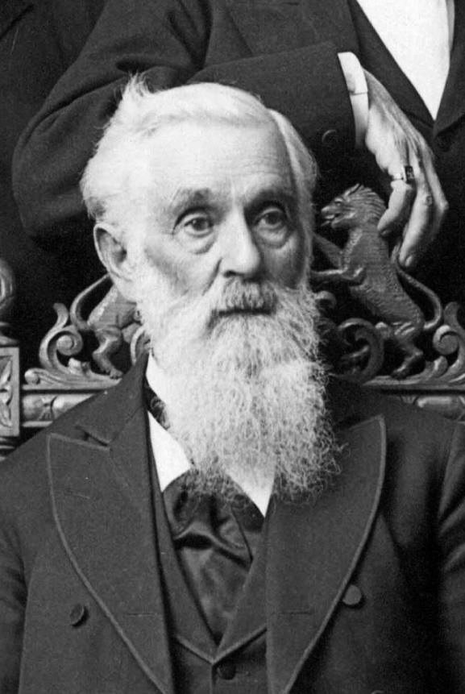
Lorenzo SnowOrdained Apostle:
Feb 1849
 Erastus Snow
Erastus Snow
Ordained Apostle:
Feb 1849
 Franklin D. Richards
Franklin D. Richards
Ordained Apostle:
Feb 1849
1850
 Jebediah M. Grant
Jebediah M. Grant
Ordained 2nd Counselor:
April 1854
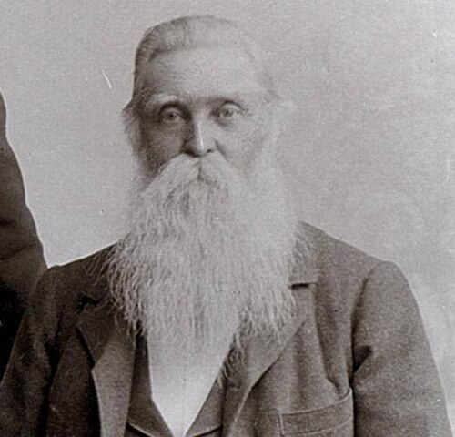
John SmithOrdained a Patriarch:
Feb 1855
 Daniel H. Wells
Daniel H. Wells
Ordained 2nd Counselor:
Jan 1857
1860
 George Q. Cannon
George Q. Cannon
Ordained Apostle:
Aug 1860
 Joseph F. Smith
Joseph F. Smith
Ordained Counselor:
July 1866
 Brigham Young Jr.
Brigham Young Jr.
Ordained Apostle:
Oct 1868
1870
 Albert Carrington
Albert Carrington
Ordained Apostle:
July 1870
 John W. Young
John W. Young
Ordained Counselor:
June 1873
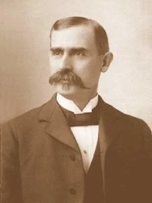
Moses ThatcherOrdained Apostle:
April 1879
1880
 Francis M. Lyman
Francis M. Lyman
Ordained Apostle:
Oct 1880
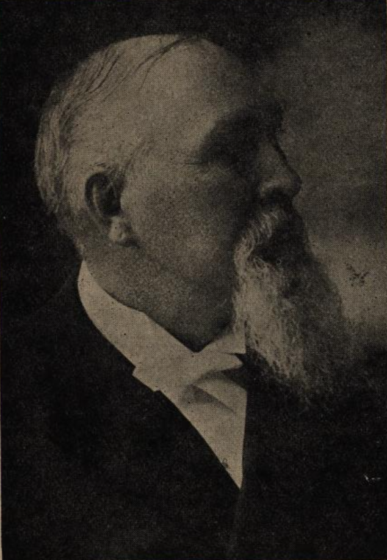
John H. SmithOrdained Apostle:
Oct 1880
 George Teasdale
George Teasdale
Ordained Apostle:
Oct 1882
 Heber J. Grant
Heber J. Grant
Ordained Apostle:
Oct 1882
 John W. Taylor
John W. Taylor
Ordained Apostle:
April 1884
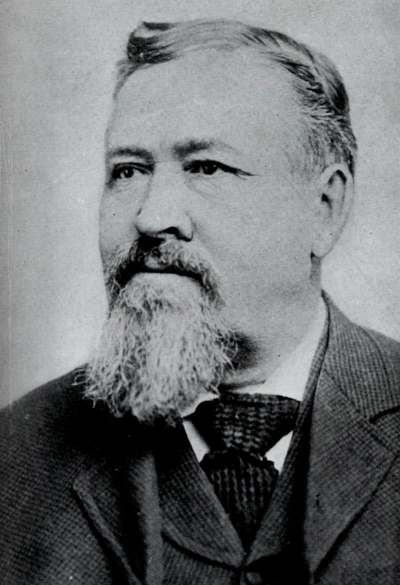
Marriner W. MerrillOrdained Apostle:
Oct 1889
 Anthon H. Lund
Anthon H. Lund
Ordained Apostle:
Oct 1889
 Abraham H. Cannon
Abraham H. Cannon
Ordained Apostle:
Oct 1889
1890
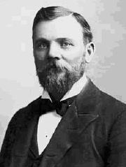
Matthias F CowleyOrdained Apostle:
Oct 1897
 Abraham O. Woodruff
Abraham O. Woodruff
Ordained Apostle:
Oct 1897
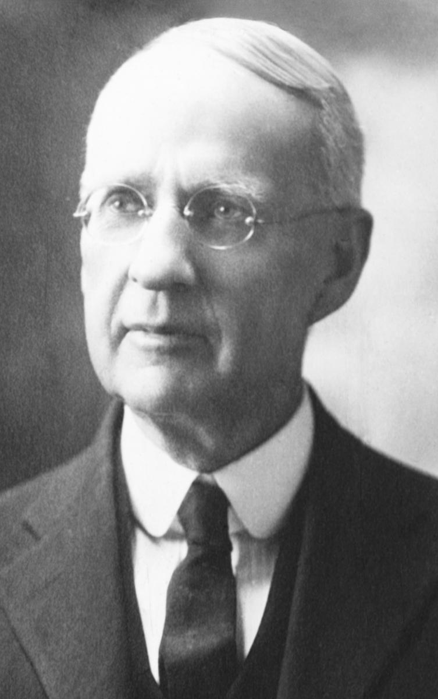
Rudger ClawsonOrdained Apostle:
Oct 1898
1900
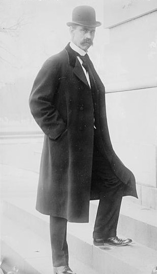
Reed SmootOrdained Apostle:
April 1900
 John R. Winder
John R. Winder
Ordained Counselor:
Oct 1901
 Hyrum M. Smith
Hyrum M. Smith
Ordained Apostle:
Oct 1901
 George Albert Smith
George Albert Smith
Ordained Apostle:
Oct 1903
 Charles W. Penrose
Charles W. Penrose
Ordained Apostle:
July 1904
 George F. Richards
George F. Richards
Ordained Apostle:
April 1906
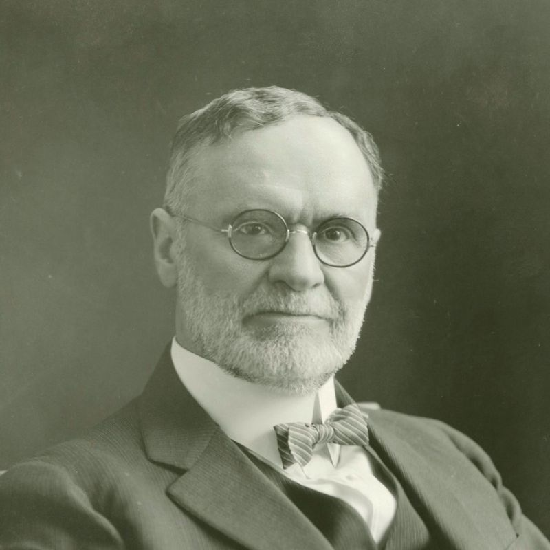
Orson F. WhitneyOrdained Apostle:
April 1906
 David O. McKay
David O. McKay
Ordained Apostle:
April 1906
 Anthony W. Ivins
Anthony W. Ivins
Ordained Apostle:
Oct 1907
1910
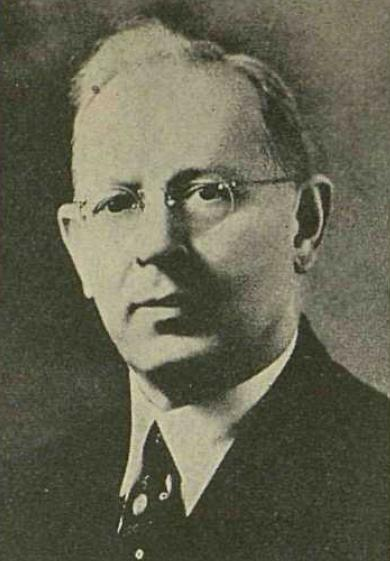
Joseph Fielding SmithOrdained Apostle:
April 1910
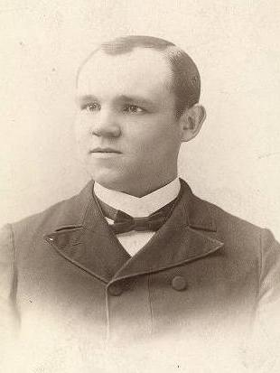
James E. TalmageOrdained Apostle:
Dec 1911
 Hyrum G. Smith
Hyrum G. Smith
Ordained a Patriarch:
May 1912
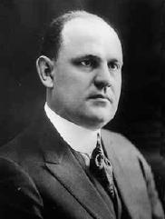
Stephen L RichardsOrdained Apostle:
Jan 1917
 Richard R. Lyman
Richard R. Lyman
Ordained Apostle:
April 1918
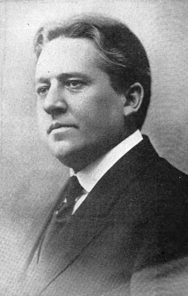
Melvin J. BallardOrdained and Apostle:
Jan 1919
1920
 John A. Widtsoe
John A. Widtsoe
Ordained an Apostle:
March 1921
 Charles W. Nibley
Charles W. Nibley
Ordained a Counselor:
May 1925
1930
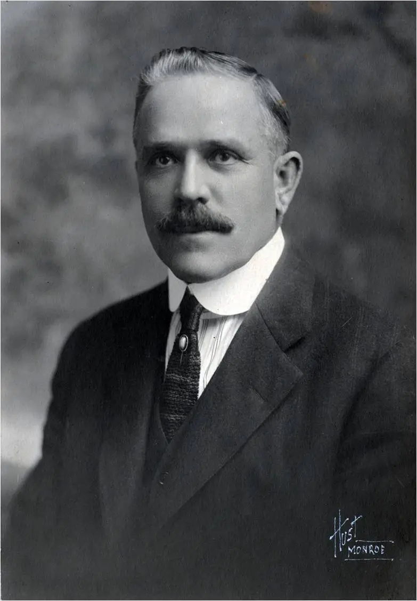
Joseph F. MerrillOrdained an Apostle:
Oct 1931
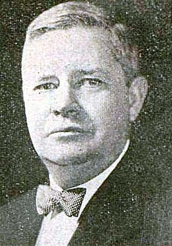
J. Reuben Clark Jr.Ordained Second Counselor:
April 1933
 Charles A. Callis
Charles A. Callis
Ordained an Apostle:
Oct 1933
 Alonzo A. Hinckley
Alonzo A. Hinckley
Ordained an Apostle:
Oct 1934
 Albert E. Bowen
Albert E. Bowen
Ordained an Apostle:
April 1937
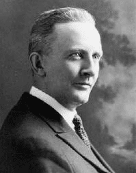
Sylvester Q. CannonOrdained an Apostle:
Oct 1939
1940
 Harold B. Lee
Harold B. Lee
Ordained an Apostle:
April 1941
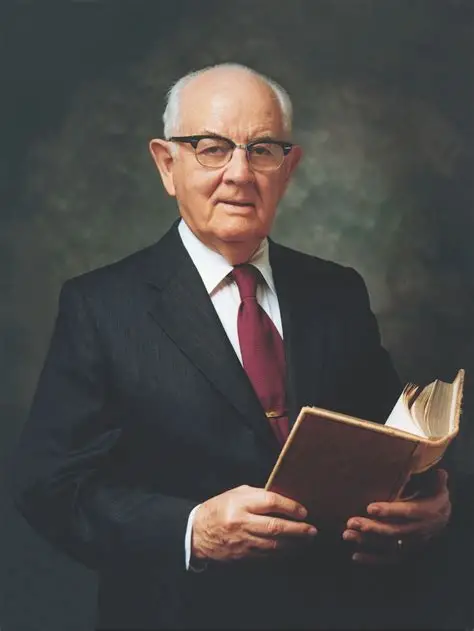
Spencer W. KimballOrdained an Apostle:
Oct 1943
 Ezra Taft Benson
Ezra Taft Benson
Ordained an Apostle:
Oct 1943
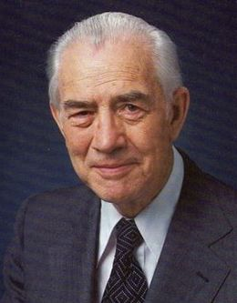
Mark E. PetersenOrdained an Apostle:
April 1944
 Matthew Cowley
Matthew Cowley
Ordained an Apostle:
Oct 1945
 Henry D. Moyle
Henry D. Moyle
Ordained an Apostle:
April 1947
 Eldred G. Smith
Eldred G. Smith
Ordained a Patriarch:
April 1947
1950
 Delbert L. Stapley
Delbert L. Stapley
Ordained an Apostle:
Oct 1950
 LeGrand Richards
LeGrand Richards
Ordained an Apostle:
April 1952
 Adam S. Bennion
Adam S. Bennion
Ordained an Apostle:
April 1953
 George Q. Morris
George Q. Morris
Ordained an Apostle:
April 1954
 Hugh B. Brown
Hugh B. Brown
Ordained an Apostle:
April 1958
 Howard W. Hunter
Howard W. Hunter
Ordained an Apostle:
Oct 1959
1960
 Gordon B. Hinckley
Gordon B. Hinckley
Ordained an Apostle:
Oct 1961
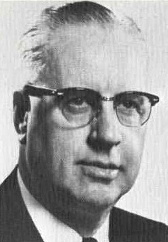
Thorpe B. IsaacsonOrdained a Counselor:
Oct 1965
 Alvin R. Dyer
Alvin R. Dyer
Ordained a Counselor:
April 1968
1970
 Boyd K. Packer
Boyd K. Packer
Ordained an Apostle:
April 1970
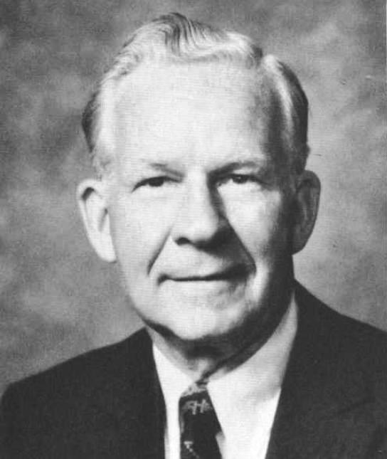
Marvin J. AshtonOrdained an Apostle:
Dec 1971
 Bruce R. McConkie
Bruce R. McConkie
Ordained an Apostle:
Oct 1972
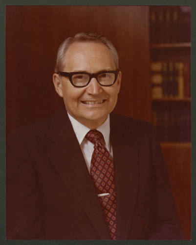
L. Tom PerryOrdained an Apostle:
April 1974
 David B. Haight
David B. Haight
Ordained an Apostle:
Jan 1976
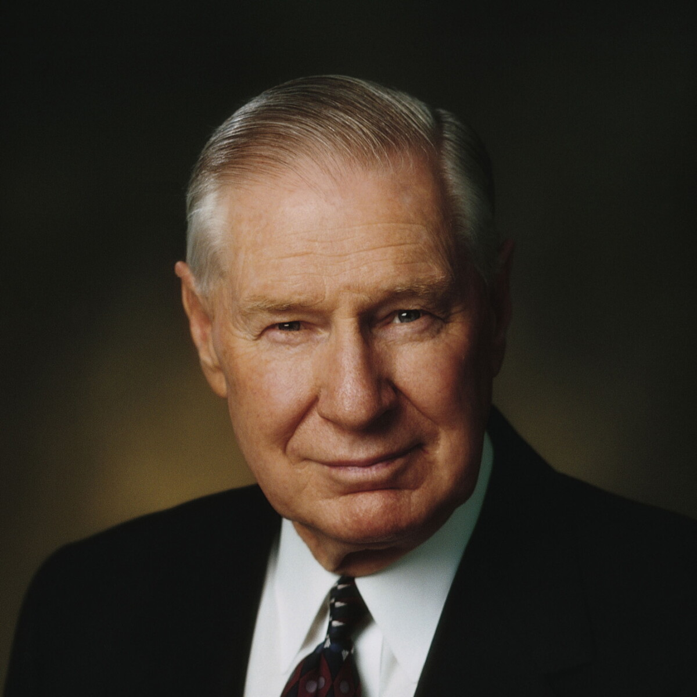
James E. FaustOrdained an Apostle:
Oct 1978
1980
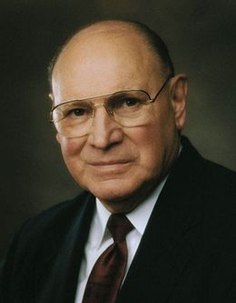
Joseph B. WirthlinOrdained an Apostle:
Oct 1986
1990
2000s
None Yet